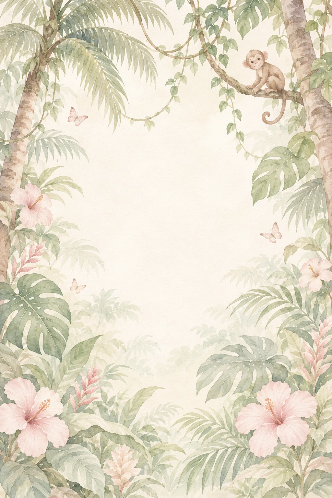
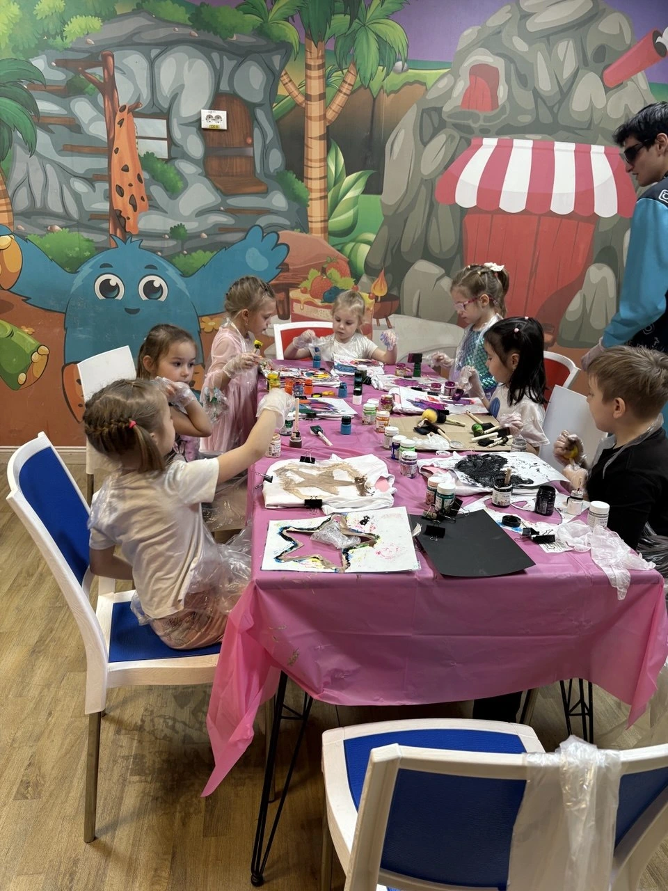
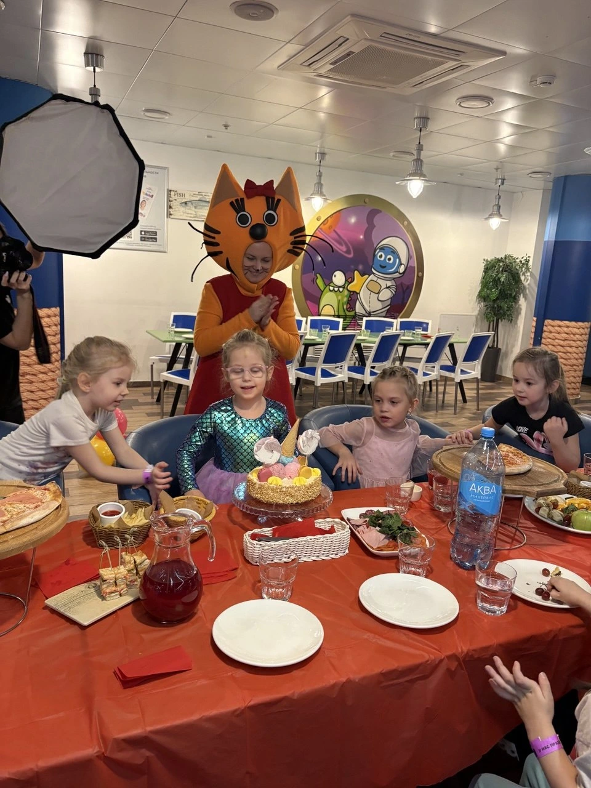
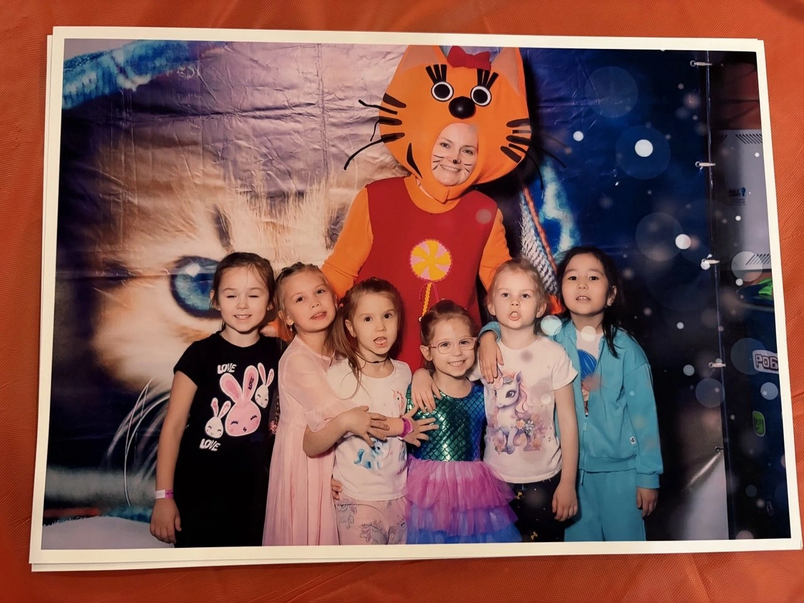

Катюша зовёт
друзей на праздник!
28 ноября у нас важный план: поздравлять Катюшу! Она очень ждёт своих друзей — вместе играть, смеяться и отправиться в настоящее приключение.
В этот день наша дружная компания встретится в Monkey Park. Будем разгадывать загадки с Джуди, пробовать праздничные угощения и придумывать самые весёлые движения на дискотеке.
С друзьями любое приключение интереснее! Приходите помогать Катюше задувать свечи, загадывать желания и радоваться её дню рождения.
До встречи в джунглях!
Катюша ♡

Когда друзья рядом,
приключения веселее!
Так было на нашем празднике в прошлом году ♡



Наш праздничный
план
Приключения, свечи на торте и танцы.
Всё самое любимое — в одной субботе.
- 10:30 — 11:3001 / Приключение начинается
По следам Джуди
Самая смелая крольчиха из «Зверополиса» зовёт в квест! Будем искать подсказки, помогать друг другу и раскрывать маленькие тайны.
В этот же час — праздничный вынос торта. Приготовьте улыбки и желание!
- 11:3002 / Вкусная пауза
Время подкрепиться
Соберёмся за фуршетом, поделимся впечатлениями и немного передохнём перед новыми весёлыми делами.
- 12:30 — 13:0003 / Танцуем от души
Маленькая дискотека
Любимые ритмы, смешные движения и танцы, в которых главное — хорошее настроение!
«Тайна Коко»
10:30 — 13:00На весь день
После праздника можно остаться
и продолжить играть!
Команда добрых
сыщиков, сбор!
Джуди знает: даже самая запутанная история становится проще, когда рядом друзья.
Берите с собой любопытство, смекалку и готовность удивляться. Остальное приключение уже приготовило для нас!
Наши джунгли —
в Monkey Park
В этот день в парке — «Тыквенный карнавал». А наш уютный уголок для праздника — комната «Тайна Коко».
28 ноября · 10:30–13:00
Комната «Тайна Коко»
Подарки
из Катюшиных мечтаний
Здесь собраны маленькие и большие Катюшины мечты — те самые, от которых загораются глаза и хочется скорее сказать: «Мама, смотри!»
Мы бережно собрали их в вишлист, чтобы вам было легко выбрать свой подарок и стать частью исполнения одного из её желаний.
Посмотреть Катюшины мечты ↗